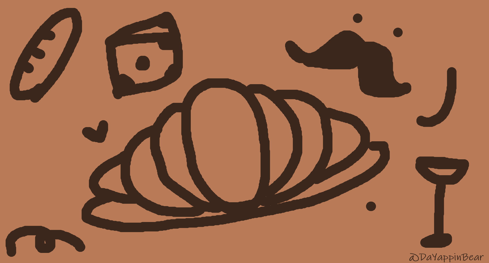
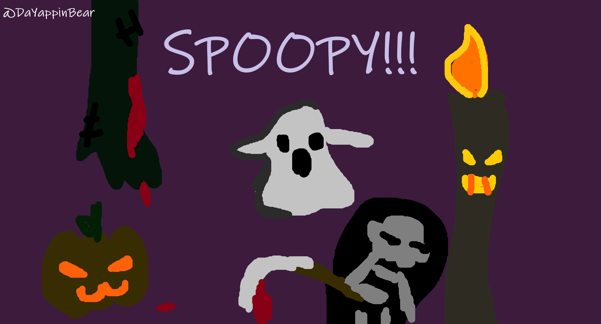

Le Croissant miam-miam
This is a French pastel wallpaper :)
These are random artworks drawn using a mouse on MSPaint. Hope you like them :-D

This is a French pastel wallpaper :)

I got the glowing effect by adding a vibrant color on a dark color and background.